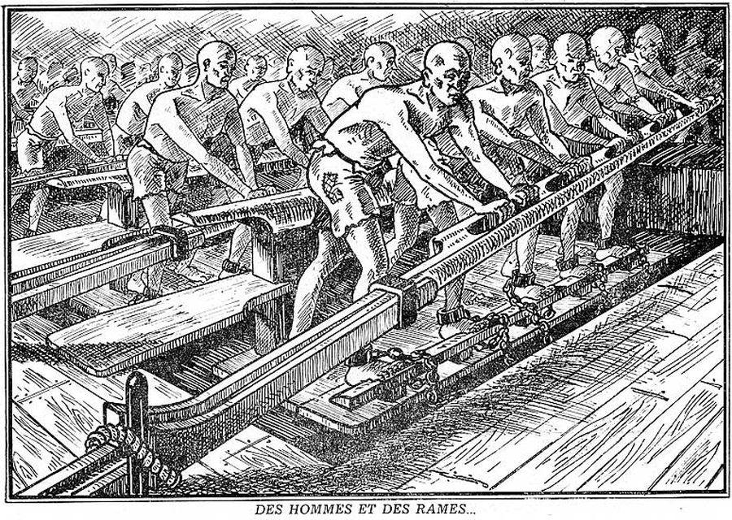
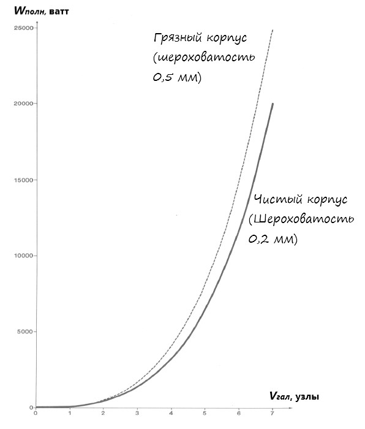
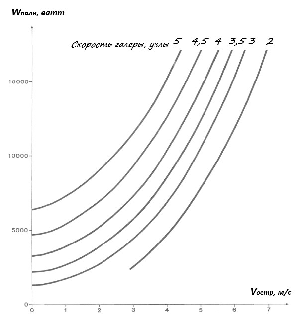

Мощность галерного «двигателя»
Только в квадратах, иль нет, расстояний их мощность?
В них вся преемственность духа людей и народов,
В них обретается всё, что проявлено духом,
Что отвоевано в тяжких усильях от плоти.
К. К. Случевский. Загробные песни.
Выше мы выяснили, какое сопротивление движению испытывает стандартная французская галера, которая движется со скоростью 5 узлов при отсутствии встречного ветра.
Для преодоления этого сопротивления гребцам необходимо затратить энергию.

а) по преодолению сопротивления воды.
За время t галера переместится на расстояние D1 относительно воды, при этом будет совершена работа (в джоулях):
Eгидр = Rгидр x D1
Так как D1= Vгал x t, то
Eгидр = Rгидр x Vгал x t
Заменив Rгидр его выражением, получим
Eгидр = ½ ρ· Ω·Сгидр· Vгал3 · t
b) по преодолению воздушного сопротивления.
За время t галера переместится на расстояние D2 относительно воздуха, при этом будет совершена работа (в джоулях):
Eаэр = Rаэр x D2
На основании закона о сложении скоростей, скорость надстроек галеры по отношению к воздуху равняется Vгал + Vветр , отсюда
Vгал + Vветр = D2 / t
и
D2 = (Vгал + Vветр) × t
Следовательно,
Eаэр = Rаэр×(Vгал + Vветр) × t
После замены Rаэр его выражением, получим
Eаэр = ρ/2× Ω × Саэр × (Vгал + Vветр)3 × t
Полная энергия, которую надо затратить для движения галеры равна
Eполн = Eгидр + Eаэр
или, подставив выражения величин
Eполн = ½ ρ· Ω·Сгидр· Vгал3 · t + ½ ρ × Ω × Саэр × (Vгал + Vветр)3 × t = ½ ρ· Ω·[ Сгидр· Vгал3 + Саэр × (Vгал + Vветр)3]× t
Учитывая, что мощность равняется отношению энергии ко времени (работе в единицу времени): W = E/t, получим
Wполн = ½ ρ· Ω·[ Сгидр· Vгал3 + Саэр × (Vгал + Vветр)3] (*)
Мы можем раскрыть это выражение и получить формулу для вычисления мощности, необходимой для движения галеры с заданной скоростью, при учете скорости встречного ветра. Но делать этого не будем, чтобы не загромождать текст, а сразу приведем выражение для нашего случая, когда встречный ветер равняется нулю:
Wполн = ½ ρ· Ω·( Сгидр + Саэр ) × Vгал3
Вот как это выражение можно представить на графике

Мощность, необходимая для движения галеры при отсутствии встречного ветра, как функция от скорости галеры
Справочно приведем графики для случая с учетом ветра

Мощность, необходимая для движения галеры как функция от скорости встречного ветра.
Подставив наши значения в выражение (*), получим
Wполн = ½ ·1026 × 253(0.002635 + 0.00025) × 2.5723
Т.е приблизительно 6371 вт.
Зная необходимую для движения мощность, легко найти работу, которую совершают гребцы за один цикл гребли, за один гребок. Необходимое для этого цикла время легко вычислить, зная темп гребли:
tцикл = 60 / T = 60/21 = 2,857 секунды.
Производимая при этом работа Ацикл = 6 371 × 2.857 = 18 202 джоулей.
Если предположить, что эффективность гребцов на каждом весле одинакова, работа гребцов на одном весле
Авесл = 18202 /51 = 356, 9 джоулей.
Эту величину мы вывели из соображений об энгергии, необходимой для преодоления сопротивления движению галеры. В следующий раз мы взглянем на эту же проблему с другой стороны, изучая законы, связанные с работой весла.